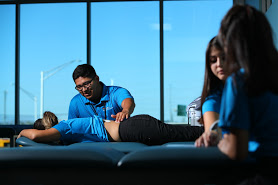

Physical Therapy the treatment of disease, injury, or deformity by physical methods such as massage, heat treatment, and exercise rather than by drugs or surgery. This program helps and teach our students how to become techniques and be ready for future jobs. Like most atheletes and people that have serious accidents have personal physical therapy technicians to help them get back the ablilities they could have lost.
In order to obtain the certification, our students must go through a multitude of networking and community service to prepare them for future careers and once our students obtain the certification we set them with interships so they can have a job after high school.
This type of Physical Therapy manages with younger people that have problems performing activities that have injuries, pre-existing conditions and problems caused by illnesses or diseases.
This type of Physical Therapy is for older adults, it's purpose is to improve their balance and strength, build their confidence, and remaining active.